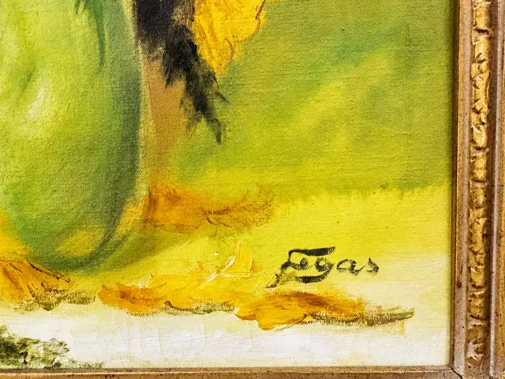
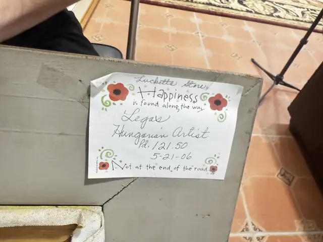
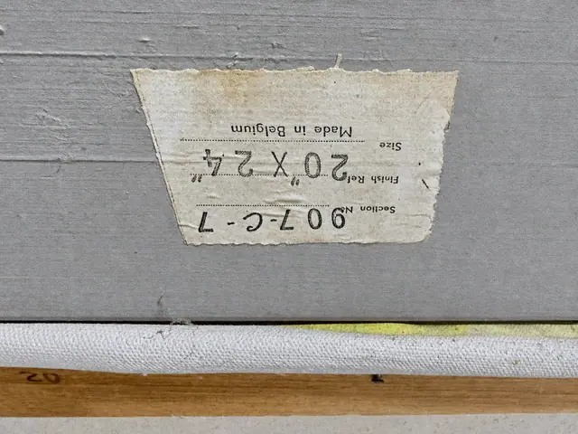

Paintings & Prints
Sunflower Still Life Oil on Canvas Signed Legas, Carved Gold Frame
Legas
Price Upon Request




About the Item
LEGAS (Hungarian). Still life of yellow sunflowers in a vase, oil on canvas, signed lower right. Stretcher label 'Section No. 907-C-7, Finish Ref. 20" x 24", Made in Belgium'. Handwritten note to the reverse. Presented in a carved baroque gold frame.
Details
- Creator:
- Legas
- Dimensions:
- Height: 33.0 in (83.82 cm)
Width: 28.25 in (71.75 cm)
outside of frame - Condition:
- Offered in the condition shown in the photographs.
- Reference Number:
- VO-49